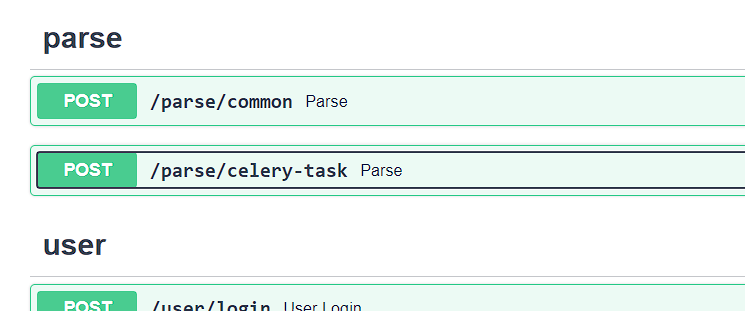
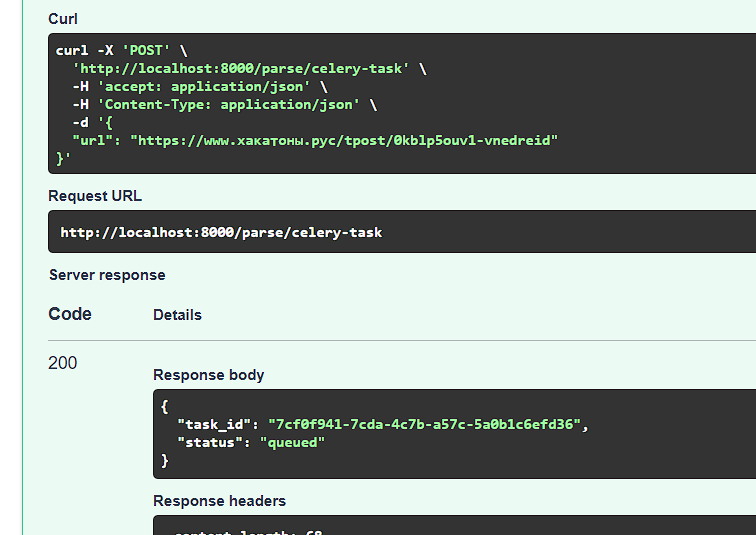

Main
Лабораторная работа 3. Упаковка FastAPI приложения в Docker, Работа с источниками данных и Очереди
Выполнение
Dockerfile приложения FastApi:
FROM python:3.13-slim
WORKDIR /app
COPY requirements.txt /app/
RUN pip install --no-cache-dir -r /app/requirements.txt
COPY ./app /app
EXPOSE 8000
CMD ["uvicorn", "app:app", "--host", "0.0.0.0", "--port", "8000"]
Dockerfile приложения парсера:
FROM python:3.11-slim
WORKDIR /parser
COPY requirements.txt /parser/
RUN pip install --upgrade pip \
&& pip install --no-cache-dir -r /parser/requirements.txt
COPY ./parser /parser
EXPOSE 8001
CMD ["uvicorn", "app:app", "--host", "0.0.0.0", "--port", "8001"]
docker-compose.yaml:
services:
postgres:
image: postgres:15
env_file:
- .env
volumes:
- postgres:/data/postgres
ports:
- "5436:5432"
api:
build:
context: .
dockerfile: app.Dockerfile
ports:
- "8000:8000"
env_file:
- .env
depends_on:
- postgres
parser:
build:
context: .
dockerfile: parser.Dockerfile
ports:
- "8001:8001"
env_file:
- .env
depends_on:
- postgres
- api
redis:
image: redis
ports:
- "6379:6379"
volumes:
- redis:/data
celery:
build:
context: .
dockerfile: parser.Dockerfile
command: ['python', '-m', 'celery', '-A', 'celery_config.celery_app', 'worker']
depends_on:
- redis
- postgres
- parser
env_file:
- .env
volumes:
postgres:
redis:
celery_config:
from celery import Celery
from parser import parse_and_save_page
import requests
celery_app = Celery("parser", broker='redis://redis:6379/0', backend='redis://redis:6379/0')
@celery_app.task(name="parse_from_url")
def parse_from_url(url: str):
try:
response = requests.get(url)
response.raise_for_status()
hackathon = parse_and_save_page(response.text)
except requests.RequestException as e:
print(f"Error processing {url}: {e}")
parser.app:
app = FastAPI()
@app.post("/parse")
def parse_url(data: ParseRequest):
try:
response = requests.get(url)
response.raise_for_status()
hackathon = parse_and_save_page(response.text)
return {"hackathon": hackathon}
except requests.RequestException as e:
raise HTTPException(status_code=500, detail=str(e))
@app.post("/parse-trigger")
async def trigger_parse(data: ParseRequest):
task = parse_from_url.delay(data.url)
return {"message": "Parse task started", "task_id": task.id}
Эндпоинты для взаимодействия с parser: 
Вызов выполнение таски из fastapi приложения: 